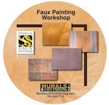
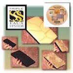
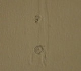
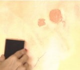
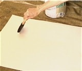
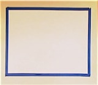
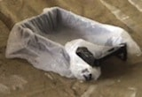
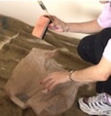
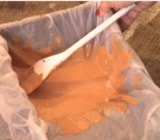
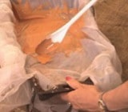

These faux painting tips are on the DVD included in the Basic Faux Painting Kit.
This Faux Painting Workshop DVD has a great section for tips that includes basic terms and preparation steps, also.
With our Basic faux painting kit, you can learn how to faux paint 10 Techniques like Old World Parchment, Color Washing, Faux Brick, Stone, Ragging and Sponging in multiple colors! That includes FIVE Tools plus DVD for only $39.99. The tips alone are worth the price for the whole kit.

With every type of art, there are certain tips that stand out. In the art of Faux Painting and Faux Finishing, there are no exceptions. This article explains what the most important faux painting tip is. It has been featured on many Ezine publications. To read the article, click on this link: The Most Important Faux Painting Tip
Tape off your ceilings and baseboards with low tack masking tape. Blue tape works great. Use a cloth drop cloth instead of plastic. Drips will soak into the cloth and dry quicker so you don’t track paint thru the house.


Fix holes or cracks on the walls first and remove dirt. Make sure you paint the patches where you fixed the wall with the same base coat as the rest of the wall. If not as you can see by the picture to the right, the patches will show through. That’s because glazes are not like paint which is opaque. So the texture of the wall must be the same unless you want to have places where the faux finish looks different. painted holes on wallWater based Latex Paints in “satin” or “eggshell” is the best type of paint to use for your base coat. However, if you want, you can paint designs on the wall with a different texture or sheen so that when you faux paint the wall, the designs will show thru the finish because of the difference in sheen or texture.


Always practice your faux painting technique on boards first. You can save money by purchasing poster boards at any stationary or office supply store. Paint the board with the same paint you are using for your base coat. Test out the glaze on a small section to see if your mixture needs to be darker. Any glaze can be darkened with a drop or two of acrylic paint. Tape your board onto a section on the wall instead of painting on the floor. taped practice board on wallThat way you can practice the technique just the way you will be doing it on the walls. Once you are happy with the board then proceed to a discreet place on your wall first. Remember, there are no mistakes in Faux Painting. If you don’t like what you see, just paint over and start again.


If you are mixing your own faux painting glazes, line your trays with a plastic bag. This saves time and mess because you don’t need to wash the tray afterwards. If you need to quit and continue your project the next day, bring the back of the plastic bag to the front and tie up the bag with a knot. That way the glaze will not dry out and you can use it the next day. putting tools in plastic bagKeep your tools in a plastic bag, also when you are not using them. You can safely keep them overnight, too. However, we don’t recommend going more than one day without washing out your tools. You can also opt to put your tools inside a plastic tray container with a lid on it. As long as there is no air getting into the bag or container, the tools will remain wet.


Mix just a small amount of glaze first. Since we use Floetrol for our glazes, we usually mix 6 parts glaze to one part paint. After you mix a small amount, try that out on your board first to see if the color looks according to what you desire. If not, then add more glaze or more paint until you are satisfied. Then put aside a small puddle of the glaze to the side, fill your tray with the rest of mixed glaze and match the new mixture to the small puddle that you have set aside. testing small amount of glazeWhen you run out of glaze, then do the same thing. Set aside a puddle of the mixture before you totally run out. Then refill tray with glaze and keep adding paint until the mixture is the same density in color. Place a small puddle next to the puddle you have from the mixture you were using to compare the two. This is very important, because if the next tray of glaze is not the same, you will notice a difference on the walls.

(This kit includes Basic, Faux Marble, Faux Wood Kit and tools for texturing)
*FREE Priority Shipping and Color Idea E-book